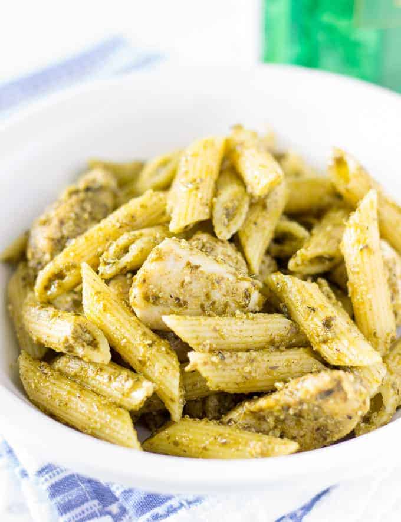

Description
This is a very fast recipe to make - great for when you're in a bind and
just want to eat something as soon as possible (due to the very few required ingredients).
And for the short amount of time this will take to cook, it is still remarkably high quality
(and great tasting!)
Ingredients:
- 8 oz Penne Rigate Pasta
- 1 tablespoon Olive Oil
- 1 lb Boneless Chicken Breast (cut into chunks)
- 1 tablespoon Italian Seasoning
- 1/4 teaspoon Salt
- 1/4 teaspoon Black Pepper
- 3/4 cup Basil Pesto
Steps:
- Cook Pasta (following applicable directions)
- Heat up oil as pasta cooks
- Add chicken, Italian Seasoning, and Pepper
- Stir well, cook for 8 minutes
- Remove Skillet from heat
- Add pasta to chicken